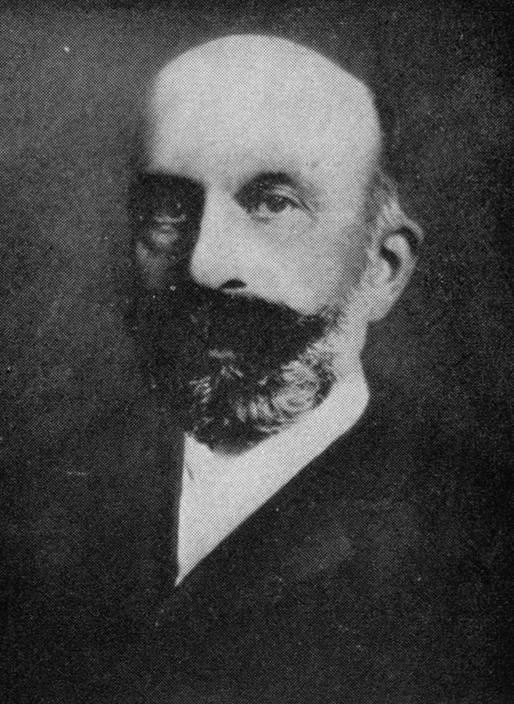

社会学でいうシカゴ学派は、20世紀初頭のアメリカでの急速な工業化と都市化で荒廃したシカゴの都市スラムを研究の対象として、現場での実証調査とセツルメント運動等の社会改革を直結させた学派です。
このアメリカの初期シカゴ学派の動きを振り返りつつ、改めて、現代での社会改善について考察します。

シカゴ学派と社会改善運動
初期のシカゴ大学社会学部は、貧困、犯罪、人種差別、移民の孤立といった都市問題を解決するための実践的な科学として機能しました。
学問を机上の空論とせず、社会の病理を直接観察し、具体的な政策提言や改善に繋げることを重視したのが最大の特徴です。
まず、実践的アプローチですが、ジェーン・アダムズらが開いたセツルメント施設（ハル・ハウス）に社会学者が居住又は深く関与し、住民の生活実態を調査しながら教育や福祉の支援を行いました。
また、生態学的アプローチとしては、シカゴの都市を同心円状のエリアに分け（同心円地帯モデル）、貧困や犯罪が特定の地域（スラム）に集中する構造的な原因を解明し、都市計画や居住環境の改善を促しました。
さらに、生活史・事例研究の活用として、統計データだけでなく、個人の手記やインタビューなどの質的調査（エスノグラフィー）を重視し、移民や非行少年が抱える社会心理的な問題を明らかにしました。
その結果、シカゴ学派の研究者たちは、単に客観的な事実を記録するにとどまらず、児童労働法、少年法の制定、公衆衛生や住宅環境の改善といった具体的なアメリカの社会福祉政策（ソーシャルワーク）の基盤を構築しました。
文献
川口晋一, 2012, 「チャールズ・ズゥエブリンとシカゴ・レクリエーション運動の萌芽─社会改良から総合都市計画へ─」『立命館産業社会論集』48(1):155-180.
https://www.ritsumei.ac.jp/ss/sansharonshu/assets/file/2012/48-1_04-07.pdf
玉井眞理子, 2001, 「シカゴ学派の盛衰-社会情勢的背景との関連からみた初期シカゴ学派の成立から衰退まで」『大阪大学教育学年報』(6):53-62.
https://ir.library.osaka-u.ac.jp/repo/ouka/all/12402/aes06-053.pdf